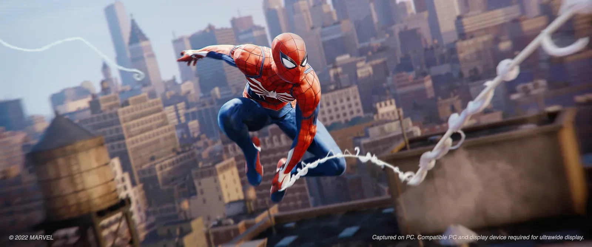
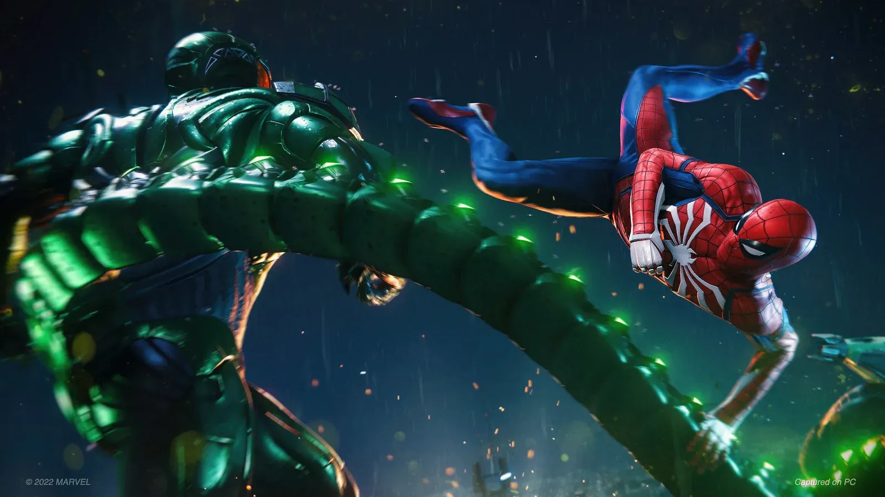
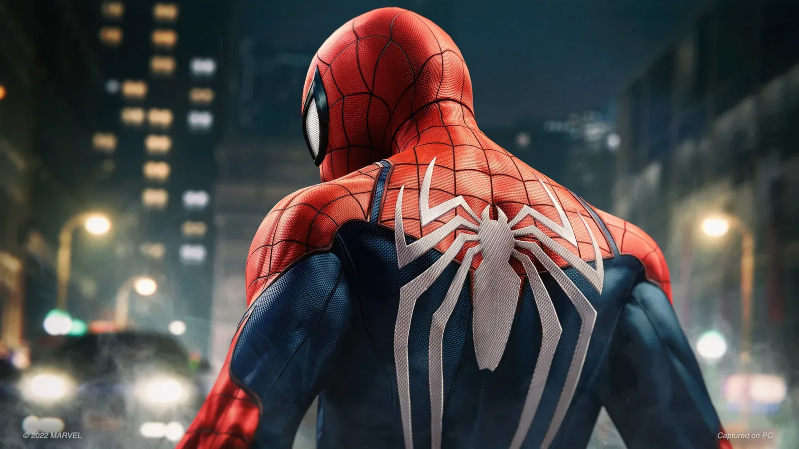
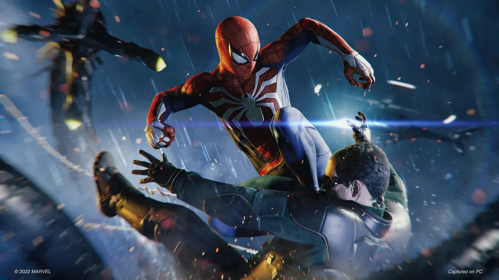
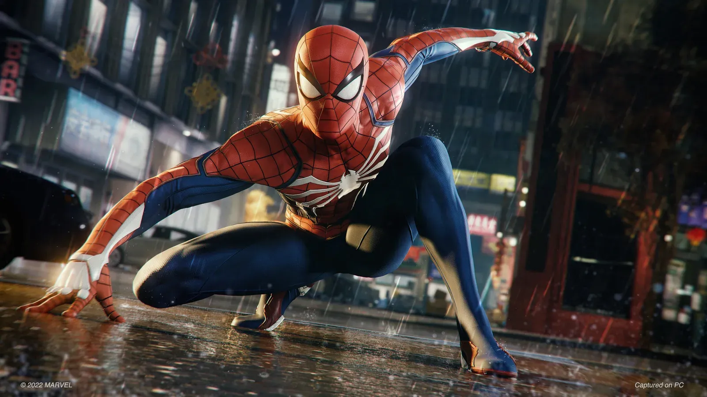
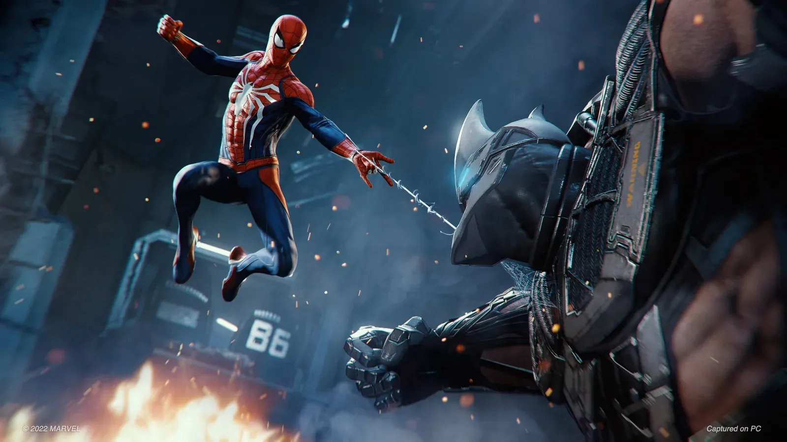
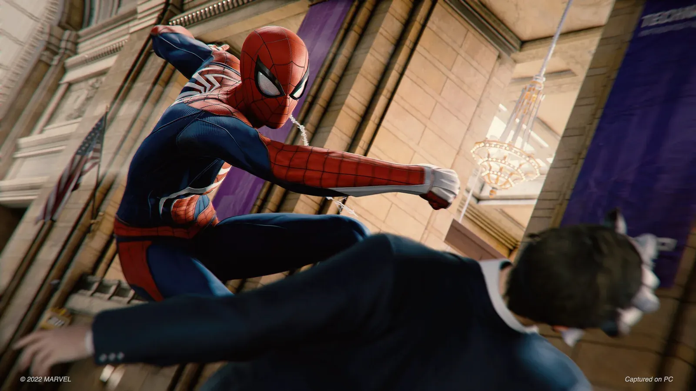

| 开发商 | Insomniac Games |
|---|---|
| 发行商 | Sony Interactive Entertainment |
| 发售日期 | PS5 版 2020 年 11 月 12 日（随主机同步） 2023 年 5 月 5 日单独发售；PC 版 2022 年 8 月 12 日 |
| 平台 | PS5 / PC（Steam · Epic） |
| 游玩时长 | 主线约 18 小时，含支线约 29 小时，全收集约 45 小时 |
| 游戏人数 | 单人 |
《漫威蜘蛛侠》是 Insomniac Games 开发、索尼互动娱乐发行的开放世界动作冒险游戏，2018 年 9 月在 PS4 首卖，2020 年 11 月随 PS5 主机同步推出重制版（Remastered）。故事不接任何电影或漫画前作，是 Insomniac 原创的蜘蛛侠宇宙——时间线设在彼得·帕克披上战衣的第 8 年，他已经是熟练老手，不再是那个手忙脚乱的高中生。
这一代最出圈的是摆荡。Insomniac 做了一套带物理惯性的蛛丝系统，荡出去的弧线、松手的时机、贴近楼顶时的加速俯冲，全都能自己控制。熟练之后在曼哈顿楼群间贴地飞行的手感，到今天依然是开放世界里独一档的存在。
剧情方面，主线要同时应付金并、负先生和章鱼博士三股势力，其中奥托·奥克塔维斯从恩师一步步走向宿敌的那条线铺垫扎实、反转有力，被很多玩家认为是整个系列写得最好的一段。重制版直接打包了「不夜城」（The City That Never Sleeps）三章 DLC，本体加资料片一次给全。
本体的 Boss 战以「阶段演出 + 招式判读」为主，难度不算高，但每一个都有明确的机制要处理。以下按主线推进顺序列出主要对手：
| 阶段 | 对手 | 攻略要点 |
|---|---|---|
| 前期 | 金并（威尔逊·菲斯克） | 近战硬碰硬，正面躲拳、绕后补装置，QTE 别漏 |
| 前期 | 电光人（麦克斯·狄伦） | 拉开距离躲电球，用绝缘装置破防，别贪刀 |
| 中期 | 犀牛人（亚历克斯·奥赫恩） | 别硬刚，等他撞墙硬直后输出，保持中距离 |
| 中期 | 蝎子人（麦克·加根） | 场地有水雾与毒气，注意范围提示，空中连击效率高 |
| 中期 | 秃鹫（阿德里安·图姆斯） | 空中战，跟着他飞，用装置打断俯冲 |
| 中后期 | 负先生（马丁·李） | 瞬移多，靠声音判断方位，完美闪避攒专注 |
| 终局 | 章鱼博士（奥托·奥克塔维斯） | 四条机械臂，攻击前摇明显，拆掉手臂就是输出窗口 |
| DLC | 锤头（Hammerhead） | 杂兵成群，先清小兵再用专注处决本体 |
💡 通用思路：完美闪避（攻击命中前一刻闪开）是整套战斗的核心——闪开就攒专注，攒满就处决，形成「闪避→处决→闪避」的循环。装置冷却短、收益高，起手就放不要省。
| 平台 | 画质 | 帧数 | 特色 | 适合人群 |
|---|---|---|---|---|
| PS5 | 保真模式（光线追踪反射）/ 性能模式（4K 时域注入） | 保真 30fps / 性能 60fps | 自适应扳机、触觉反馈、Tempest 3D 音效、SSD 秒读盘 | 主机玩家、想体验 DualSense 摆荡手感 |
| PC | 可自由度拉满，支持超宽屏与 DLSS / FSR | 取决于显卡（推荐 RTX 3070 及以上） | 帧数上限高、Mod 生态好 | 追求高帧率与画质的玩家 |
📌 摆荡的触觉反馈是 PS5 版独占体验——扳机阻尼与摆荡力度挂钩，PC 版用键鼠拿不到这层反馈。






📸 以上为 Insomniac Games / 索尼互动娱乐官方公开宣传图与实机截图（来源：Steam 商店页），版权归 Marvel 与索尼互动娱乐所有。
如果只让我留一款开放世界超级英雄游戏，就是它。
摆荡这个东西，别的游戏里它是「移动方式」，Insomniac 把它做成了「玩法本身」。在曼哈顿楼群里贴地飞行、擦着广告牌荡过去、一个俯冲加速再拉起，这套操作练熟之后有实打实的爽感，而且它不需要你打得多好——光是在城里荡着玩就能玩半小时。PS5 的触觉反馈又加了一层：摆荡时扳机的阻尼是跟着力度变的，这一层 PC 版给不了。
剧情是第二个惊喜。奥托从亦师亦友的恩师一步步走到对立面，这条线铺得很稳，到最后那场决战分量是够的。相比之下，开放世界那套支线（清据点、开研究站、捡背包）就明显是凑数，做三四个就腻了，这是 2018 年那套公式留下的痕迹。
适合人群：想体验摆荡爽感、喜欢漫威、能接受公式化支线的玩家。
不适合：对重复收集零容忍、期待真正硬核战斗的玩家。